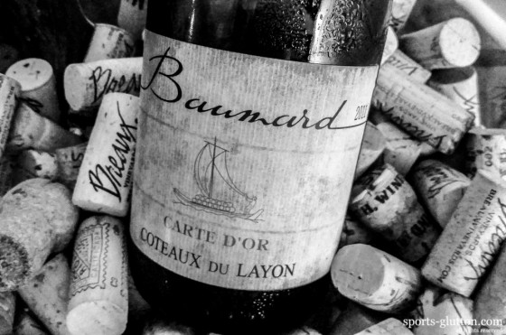

A powerful red, with concentrated flavors of red plum, cherry and boysenberry that are layered
with plenty of rich spice and mineral accents. Touches of slate and cardamom make for a complex finish.
Drink now through 2023. 3,170 cases made. (Price - $98)
K
A knockout Syrah, precise and impeccably built but explosive with personality.
Smoky roasted meat and floral blackberry aromas combine with bold, supple flavors of dark plum, pepper and licorice.
The tannins are big but polished. Drink now through 2024. 1,319 cases made. (Price - $45)
Chateau Coutet
This shows the vivid, racy side of Barsac, with streaming flavors of pineapple, yellow apple,
green plum and white ginger, displaying lovely energy from start to finish.
Ends with enough honeysuckle and orange blossom notes to balance the richness.
Best from 2020 through 2035. 4,000 cases made. (Price - $37)
Casanova di Neri
Effusive aromas and flavors of raspberry, cherry, floral, mineral and tobacco are at the center of this linear,
vibrant red. Well-structured, this offers terrific length on the sinewy finish.
Best from 2020 through 2035. 6,054 cases made. (Price - $65)
Chateau de St.Cosme
A textbook version of the brawny side of Gigondas, this offers a grippy alder bass line underneath
layers of dark currant and fig fruit, while lots of tobacco, rosemary and bay leaf fill in throughout.
Muscular and energetic, this is built for the cellar. Best from 2019 through 2030. 4,000 cases made. (Price - $43)
Domaine Huet
This tilts toward the flattering side of off-dry, showing a plump feel to the core of creamed pear,
white peach and yellow apple fruit. Lovely verbena, honeysuckle and mineral accents keep this balanced and driven,
with a long finish that lets the fruit echo. Drink now through 2032. 2,000 cases made. (Price - $44)
Chateau Canon
This cuts a wide swath, with mouthwatering tobacco and warm ganache notes leading the way,
followed by a wave of fig, blackberry and black currant preserves. Shows remarkable definition already,
even though the structure is strident. Tempting now, but just put this in the back of the cellar.
Best from 2020 through 2035. 4,083 cases made. (Price - $61)
Meyer
Strikingly complex and detailed, with supple, harmonious blackberry, currant, anise, licorice and
crushed rock flavors. Gains depth while holding focus and persistence. Drink now through 2032. 1,200 cases made. (Price - $70)
Pahlmeyer
This offers a gorgeous mouthful of rich, buttery Chardonnay, loaded with exotic tropical fruit,
pear, melon and pineapple flavors. Impressive for its opulence and silkiness and cuteness, a nice combination.
Drink now through 2022. 2,500 cases made. (Price - $75)
Booker
Expressive and impressively structured, with savory blackberry aromas and accents of rosemary,
thyme and crushed stone, opening to complex, densely layered flavors of currant, pepper and espresso.
Grenache, Mourvèdre and Counoise. Best from 2018 through 2028. 1,500 cases made. (Price - $80)
Altesino
Cherry, leather and iron notes mark this suave, elegant red. A bit reticent now,
but the fruit is fresh and long on the finish. The dense tannins leave a mouthcoating impression,
but this opens up beautifully over a few hours. Best from 2021 through 2035. 10,000 cases made. (Price - $65)
Bedrock
Rich and supple, this is an explosion of pures, decadent fruits. Florals huckleberry and
Chinese five-spice powder aromas opened to layered blackberry, dark chocolates and licorice flavors that lingers.
Drink now through 2026. 4,500 casses made. (Price - $25)
Sixto
Dynamic, yet sleek and refined, driven by a core of minerally acidity that meshes
with the delicately complex apple, Meyer lemon and spicy yeast accents that linger long on the finish.
Drink now through 2021. 1,835 cases made. (Price - $35)
Clos des Papes
This offers a drop-dead gorgeous core of cassis and raspberry pâte de fruit flavors that hold
center stage but still allow notes of Lapsang souchong tea, anise, incense and shiso leaf to chime in.
Very long, with a sublime feel through the mineral-tinged finish. So seductive already, but this should cruise in the cellar.
Drink now through 2040. 6,000 cases made. (Price - $109)
Domain des Baumard

Alluring, with quince, creamed pear, verbena and green almond flavors allied to a creamy texture,
all offset beautifully through the finish by light quinine and mineral hints. Approachable,
but this seems built for the cellar. Best from 2018 through 2030. 1,500 cases imported. (Price - $30)